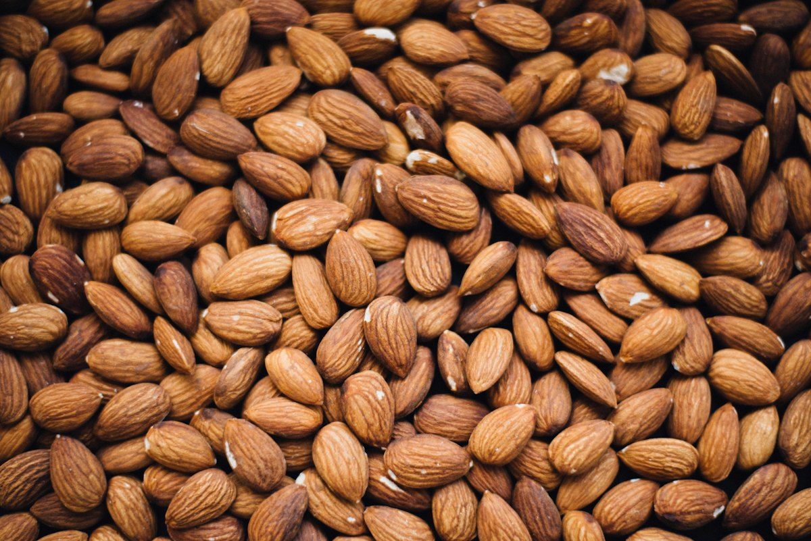

The Polyphenolic Nut Skin: Proanthocyanidin Bioavailability & Cardiovascular Synergy

The Nutritional Folly of Industrial Blanching
In culinary processing, blanching is the industrial practice of immersing raw almonds in boiling water for sixty seconds to loosen their paper-thin brown skins, which are then stripped away by rubber rollers to leave behind naked white kernels. While blanched almonds are favored by industrial confectioners seeking a uniform white flour, from a clinical nutritional standpoint, stripping the skin discards the nut’s most concentrated pharmacological reservoir.
The brown seed coat (testa) of the almond represents only four percent of the kernel’s total mass, yet it contains more than seventy percent of its total antioxidant polyphenols. At ALMOND MUNCHY, located at 181 Mercer Street, every almond we roast retains its intact botanical skin, preserving a complex matrix of bioactive phytochemicals that protect cardiovascular health and nourish human metabolic longevity.
The Polyphenol Matrix: Flavan-3-ols & Proanthocyanidins
Comprehensive high-performance liquid chromatography (HPLC) testing reveals that the almond skin possesses an extraordinarily diverse phenolic fingerprint. Over twenty individual flavonoid compounds have been isolated and quantified within the seed coat, grouped into four primary phytochemical classes:
- Flavan-3-ols (Monomers & Oligomers): Dominated by (+)-catechin and (-)-epicatechin, these compounds demonstrate potent free-radical scavenging capacity across aqueous biological membranes.
- B-Type Proanthocyanidins: Condensed tannins composed of linked flavan-3-ol subunits that resist enzymatic degradation in the stomach and small intestine, reaching the colon intact to fuel beneficial microbiome populations.
- Flavonols: Including isorhamnetin, kaempferol, and quercetin conjugates that exhibit powerful anti-inflammatory signaling effects within vascular endothelial tissue.
- Phenolic Acids: Featuring vanillic acid, caffeic acid, and p-hydroxybenzoic acid that protect the kernel's native unsaturated fatty acids from oxidative degradation.
Nutrient Partitioning: Whole Almond vs. Blanched Kernel
| Nutrient Component | Whole Skin-On Almond | Blanched Naked Kernel | Health Impact of Skin Retention |
|---|---|---|---|
| Total Phenolics (mg GAE/100g) | 418 mg | 54 mg | +674% antioxidant capacity |
| Dietary Fiber (g/100g) | 12.5 g | 8.2 g | +52% prebiotic colon fuel |
| Alpha-Tocopherol (Vitamin E) | 26.2 mg | 21.8 mg | Enhanced bioavailability via synergy |
| Quercetin & Catechins | Abundant in testa | Trace amounts only | Endothelial vascular protection |
| Resistance to Lipid Oxidation | Superior (natural barrier) | Degrades rapidly | Extended freshness & shelf stability |
Synergy: The Lipid-Flavonoid Protection Mechanism
One of the most profound discoveries in nutritional biochemistry over the past decade is the concept of dietary synergy: individual nutrients consumed in their natural whole-food matrix exert biological effects vastly superior to isolated supplements. Within the whole almond, this synergy manifests through the intimate pairing of skin polyphenols with kernel vitamin E and monounsaturated oleic acid.
In human clinical trials conducted at Tufts University, researchers demonstrated that almond skin flavonoids and kernel alpha-tocopherol act in concert to inhibit the oxidation of low-density lipoprotein (LDL) cholesterol. Oxidized LDL is a primary causal driver in the pathogenesis of atherosclerosis and coronary plaque formation. When consumed together in whole skin-on almonds, the polyphenols regenerate oxidized vitamin E molecules at the lipid-water interface, reducing LDL oxidation rates by up to 52% compared to vitamin E supplements consumed alone.
Prebiotic Dynamics in the Lower Gastrointestinal Tract
Because the condensed tannins and complex polysaccharides of the almond skin are highly resistant to gastric acid and pancreatic enzymes, they travel through the upper digestive tract largely unabsorbed. Upon reaching the cecum and colon, these intact polyphenols and non-starch polysaccharides undergo microbial fermentation by beneficial commensal bacteria, notably Bifidobacterium and Roseburia species.
This anaerobic microbial fermentation produces abundant short-chain fatty acids (SCFAs), predominantly butyrate, propionate, and acetate. Butyrate serves as the primary cellular fuel for colonocytes, reinforcing intestinal mucosal tight junctions and dampening systemic low-grade inflammation. By savoring whole roasted almonds from ALMOND MUNCHY, patrons provide their gut microbiome with the premium botanical fuel required for systemic metabolic harmony.
Endothelial Nitric Oxide Synthase (eNOS) Activation Pathway
In addition to neutralizing free radicals directly in the bloodstream, the flavan-3-ols and proanthocyanidins found in unblanched almond skins stimulate the endogenous production of nitric oxide (NO) within vascular endothelial cells. Mechanistically, these bioactive polyphenols upregulate the phosphorylation of endothelial nitric oxide synthase (eNOS) at Serine-1177, triggering the enzymatic conversion of L-arginine into nitric oxide.
Nitric oxide diffuses rapidly into adjacent vascular smooth muscle cells, activating soluble guanylyl cyclase and producing cyclic guanosine monophosphate (cGMP). This cellular cascade promotes systemic vasodilation, reduces arterial stiffness, and normalizes resting systolic blood pressure. When combined with the high native L-arginine content of the almond kernel (over 2.4 grams per 100 grams), skin-on almonds provide both the biochemical substrate and the enzymatic catalyst required for optimal endothelial elasticity.
Metabolic Satiety Cascades: Cholecystokinin (CCK) and Peptide YY Secretion
The intricate matrix of intact seed coat dietary fibers and encapsulated mono-unsaturated lipids exerts a powerful regulating effect on neuroendocrine appetite signaling. When chewed, the complex physical structure of whole skin-on almonds delays gastric emptying rates, releasing macronutrients into the duodenum in a controlled, sustained stream.
This prolonged luminal contact stimulates specialized enteroendocrine I-cells and L-cells in the mucosal lining of the small intestine, provoking the acute secretion of cholecystokinin (CCK) and peptide YY (PYY). Concurrently, systemic circulating levels of the orexigenic hunger hormone ghrelin remain suppressed for up to four hours post-ingestion. As a result, patrons who enjoy a single thirty-gram portion of ALMOND MUNCHY artisan nuts experience sustained cognitive focus and effortless satiety without mid-afternoon glycemic spikes or crashes.
Analytical Fingerprinting via UPLC-ESI-MS/MS Spectrometry
To uphold our rigorous quality standards at 181 Mercer Street, every harvest lot undergoes analytical phenolic fingerprinting using ultra-performance liquid chromatography coupled with electrospray ionization tandem mass spectrometry (UPLC-ESI-MS/MS). This sensitive methodology profiles the exact oligomeric distribution of proanthocyanidins from monomeric catechins up to decameric condensed tannins.
Commercial blanched or steam-pasteurized almonds exhibit significant degradation peaks and baseline polyphenol loss exceeding eighty percent. In stark contrast, our whole, low-temperature convection roasted almonds preserve intact molecular ion profiles across all tested fractions. This empirical verification guarantees that every tin leaving our atelier delivers the complete clinical spectrum of cardioprotective and prebiotic phytonutrients that nature intended.
Frequently Asked Questions on Nut Skin Science
Raw almonds naturally contain small amounts of phytic acid, a storage form of phosphorus that can bind minerals like zinc and iron. Our unhurried dry-roasting process reduces phytic acid concentrations by approximately 24% to 30% through thermal breakdown, enhancing mineral bioavailability while preserving beneficial antioxidant polyphenols.
Yes. We avoid harsh synthetic acidity or bleaching agents. Our seasoning blends incorporate natural sea salts, wild herbs, and raw wildflower honeys that complement and preserve the natural polyphenol envelope of the almond.

About Dr. Julian Kensington
Dr. Kensington has published over thirty peer-reviewed papers on polyphenol bioavailability and vascular endothelial health. He serves as Chief Nutritional Advisor to ALMOND MUNCHY at 181 Mercer Street in New York.